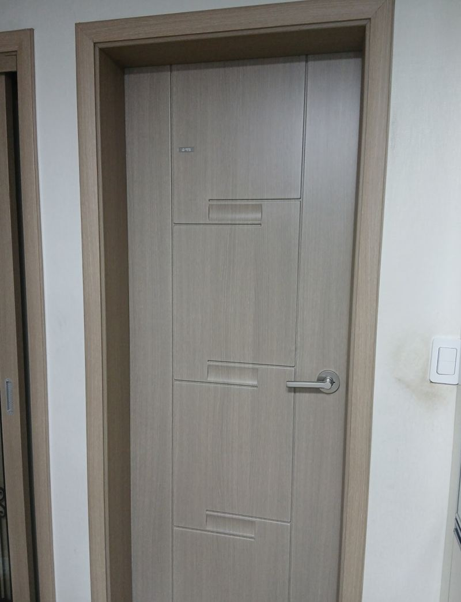
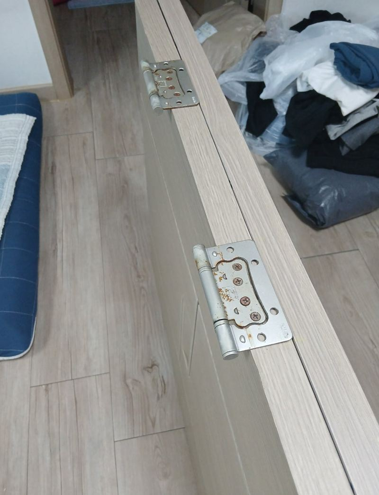
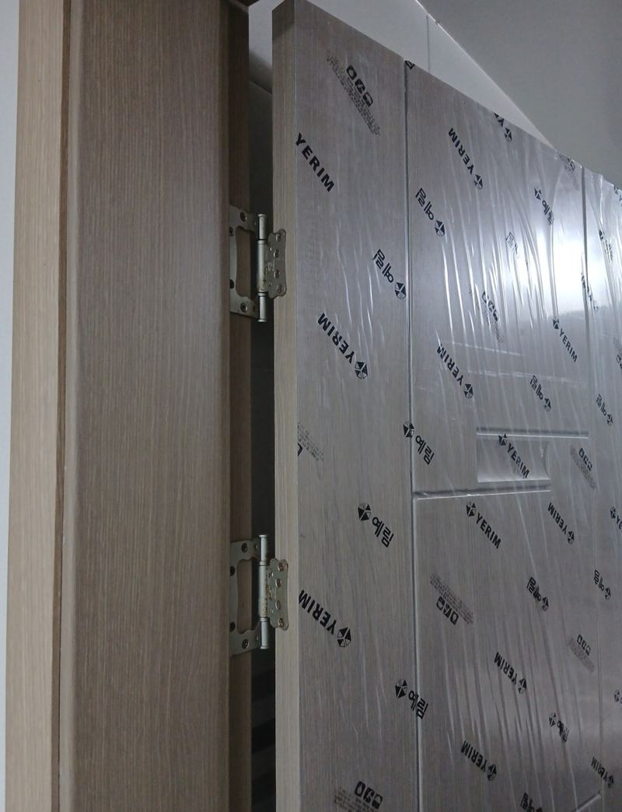
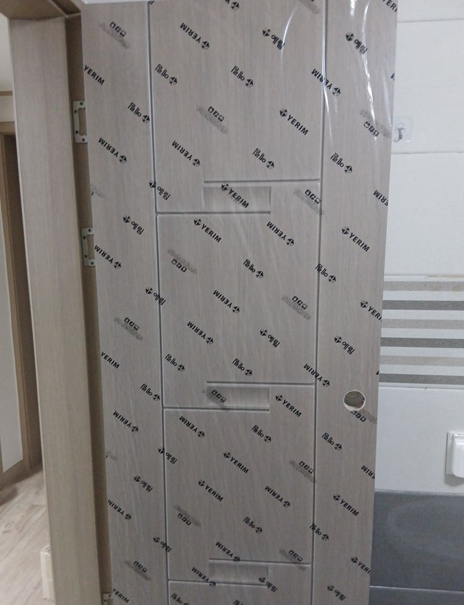
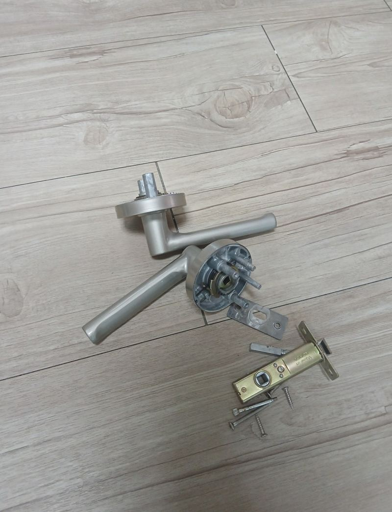
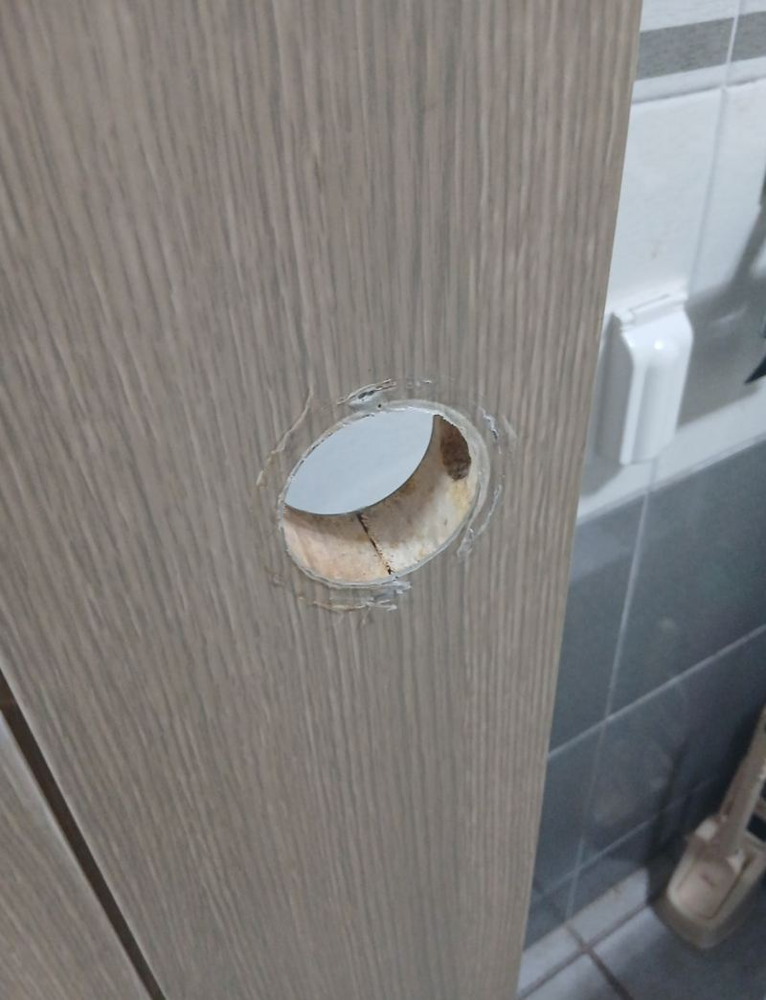

경기광주 빌라 방문 파손 교체, 보험 처리 가능할까
← 밀어서 전후 비교 →
"친구가 놀러 와서 새벽에 화장실 가다가 넘어지면서 휴대폰으로 문을 찍었어요. 문짝이 깨졌는데 빨리 바꿀 수 있을까요?" 경기광주 초월읍 빌라에 사는 세입자분이었어요. 일상배상책임보험으로 처리할 수 있다고 들어 진행하려 한다고 하셨어요. 문짝 일부가 부서져 날카롭게 튀어나와 있어 계속 쓰기엔 위험했어요. 문틀과 경첩 자리를 살린 채 깨진 문을 떼고, 실측해 기존과 같은 디자인으로 만든 새 문짝을 달았어요.
| 현장 | 경기광주 초월읍 산이리 빌라 화장실 |
|---|---|
| 원인 | 넘어지면서 부딪혀 문짝 일부 파손 |
| 한 일 | 파손 확인·실측 → 깨진 문짝 탈착 → 같은 규격·디자인 문짝 준비 → 경첩 위치 맞춰 장착 → 손잡이 설치 → 여닫이·틈 확인 |
| 비용 | 세입자분이 일상배상책임보험 처리를 진행 |
보험 처리, 먼저 확인할 것
집 안 물건을 실수로 망가뜨린 경우, 가입한 보험에 일상생활배상책임 특약이 있으면 처리되는 경우가 많아요. 특히 세입자가 집주인 소유의 문을 망가뜨렸을 때 쓰이곤 해요. 다만 적용 여부와 범위는 가입한 보험마다 달라서, 작업 전에 보험사에 먼저 물어보는 게 좋아요.
- 파손 사진교체 전에 문 전체와 깨진 부분을 찍어 두세요.
- 사고 경위언제, 어떻게 망가졌는지 적어 두면 접수가 편해요.
- 필요 서류견적서나 작업 내역 등 보험사가 요구하는 서류를 먼저 확인하세요.
- 집주인과 공유세입자라면 교체 전에 집주인에게도 알려 두세요.
파손된 방문 교체 순서
실측
깨진 문을 살피고 문틀 구조와 문짝 크기를 쟀어요.


깨진 문 떼기
부서진 조각이 바닥에 떨어지지 않게 잡고 천천히 분리했어요. 억지로 뜯으면 바닥재나 벽까지 상할 수 있어요.
새 문짝 장착
기존과 같은 디자인과 규격으로 새 문짝을 준비해, 문틀 경첩 위치에 정확히 맞춰 달았어요.


손잡이와 마무리
손잡이 구멍을 내고 손잡이를 단 뒤, 여러 번 열고 닫으며 소리와 틈, 걸림을 확인했어요.


방문 교체에 실측이 중요한 이유
방문은 집마다 크기가 조금씩 달라서 가구점 기성품을 바로 끼우기 어려워요. 문틀이 살짝 틀어져 있으면 그에 맞게 보정해야 하고, 경첩 위치가 몇 mm만 달라도 문이 삐걱거리거나 끝까지 닫히지 않아요. 그래서 문짝만 갈아 끼우는 일이라도 문틀의 수평·수직과 경첩 자리를 먼저 확인해요.
| 확인할 것 | 안 맞으면 |
|---|---|
| 문짝 높이·폭 | 틈이 벌어지거나 문틀에 걸림 |
| 경첩 위치 | 문이 비틀려 닫힘 불량 |
| 손잡이 높이 | 래치가 문틀 구멍에 안 걸림 |
고객분은 "세입자라 집주인 눈치도 보였는데 기존 문과 똑같이 바꿔 줘서 안심됐다, 보험으로 처리돼 부담도 덜했다"고 하셨어요.
깨진 문, 교체 전까지 이렇게 두세요
- 날카로운 부분 감싸기튀어나온 조각은 테이프로 감싸 다치지 않게 해 주세요.
- 억지로 닫지 않기부서진 문을 세게 닫으면 문틀까지 금이 갈 수 있어요.
방문 파손 교체 질문
구멍 난 문을 메워서 쓸 수는 없나요?
작은 찍힘은 보수가 되지만, 깨져 속이 드러났다면 교체가 깔끔해요.
문틀도 망가졌어요.
문틀까지 금이 갔다면 함께 보수하거나 교체해요. 사진으로 먼저 확인해요.
같은 디자인을 못 구하면요?
비슷한 색과 무늬로 고르거나, 집 안 다른 문과 어울리는 걸로 정해요.
보험 접수에 서류가 필요해요.
보험사마다 요구하는 서류가 달라요. 무엇이 필요한지 먼저 확인해 상담 때 말씀해 주세요.
현관문도 같은 방식인가요?
현관문은 구조가 달라 따로 봐야 해요. 방화문은 부품 수리가 많아요.
세입자가 직접 불러도 되나요?
네, 다만 집주인에게도 알리고 진행하시는 게 좋아요.
손잡이는 그대로 쓰나요?
멀쩡하면 다시 달 수 있고, 새 문에 맞춰 바꿀 수도 있어요.
다른 방문·욕실문 현장
깨진 문 전체와 파손 부위를 가까이 찍어 보내 주세요.
전화 상담 010-4517-9872